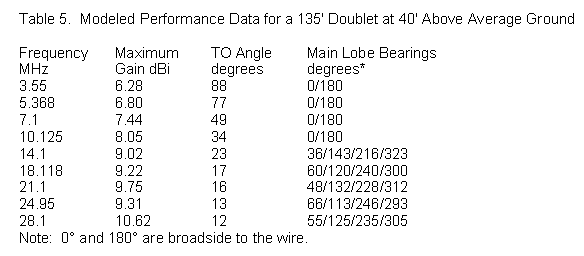

10 Frequency Asked Questions about the All-Band Doublet
10 Frequency Asked Questions about the All-Band DoubletThe all-band doublet horizontal wire antenna has a history almost as long as amateur radio itself. Despite all the words and diagrams in handbooks over the years, newcomers still send me questions about the antenna. I have collected the questions and boiled them down to 10, all of which have many variations. The goal in tackling these frequently asked questions is to help newer hams erect a successful antenna system.
1. What is an all-band doublet? The all-band doublet is actually an antenna system and not just an antenna alone. Fig. 1 shows the basic elements of the system. The horizontal center-fed wire forms the antenna proper, which accounts for the radiation of transmitted energy and the reception of incoming energy. The parallel transmission line transfers the energy from the antenna to the antenna tuner (or antenna-tuning unit, the ATU) or vice versa. We insert the tuner because the impedance that shows up at its terminals will vary widely from one band to another. So we need a way of matching the impedance at the tuner terminals to the standard 50-Ohm input and output impedance of the transceiver.
The antenna wire itself can have many lengths, but should be about ½ wavelength at the lowest operating frequency. Table 1 shows common doublet lengths that have appeared in handbooks since the 1930s. It also shows the ham bands covered by the antenna. Note that the 100' wire, while somewhat shorter than ½ wavelength, can be pressed into service on 80 meters, and the 67' wire might be used on 60 meters. However, there are limits that we shall explore as we proceed through the questions.
2. What's the difference between a doublet and a dipole? This interesting question has 2 answers: none and a lot. Conversationally, the term "dipole" often refers to any antenna that looks like a dipole, that is, a center-fed wire antenna with a feedline going to the shack. In this context, we also tend to call any end-fed antenna a Zepp (although there is a center-fed extended double Zepp) and to refer to any off-center-fed antenna as a Windom (although the original Windom had only a single feed wire).
In more precise terms, the coax-fed dipole that we sometimes set up for single-band use is a more complex antenna than its appearance suggests. It is actually a center-fed resonant ½ wavelength dipole. The center-feedpoint is obvious from the position of the feedline. It is resonant since the feedpoint impedance is (almost) purely resistive, with little or no reactance. The length is electrically ½ wavelength, which for any real wire or tubular element turns out to be shorter than a physical half wavelength. Finally, it is a dipole because, as Fig. 2 shows, the charge is minimum at the center feedpoint and maximum at the element ends. As a result, the current is maximum at the center and minimum at the wire ends. The dipole undergoes only one transition in charge and in current from the center to the wire end.1
When we use the antenna on many bands, it becomes electrically longer, because the length of a wave grows shorter with rising frequency. Hence, the charge and current patterns do not satisfy the dipole conditions above the lowest band or two. Fig. 3 shows the current distribution along a 135' wire at 80 meters and at 10 meters. Since the current does not follow the dipole pattern, the charge density is also different from a dipole. In this case, there are many transitions and the current is not maximum at the center feedpoint.
The term doublet is more generic and less fully descriptive than others. However, it also has a history. In the 1930s, it served as a label for a center fed wire with a special feed system. Later, the antenna was renamed the delta feed and the term doublet became a generic term for center-fed antennas of any length.2 Hence, our antenna is an all-band doublet.
3. Do I need to measure the wire for precise resonance on the lowest band? In a word, no. When we set up a resonant monoband dipole, we want it to achieve resonance or the lowest possible SWR with our coax cable feedline. However, the all-band doublet antenna system uses (normally) high impedance parallel transmission line. Small variations in antenna wire length will make no difference to doublet performance or to our ability to match the impedance at the shack end of the feedline. We sometimes see radiation patterns for a Yagi antenna change shape as we move from one end of an amateur band to the other. However, the patterns produced by the all band doublet change very slowly with frequency. For example, if we only have room for 125' of wire, then it will do very well and yield the same results as a 135' wire on the lower HF bands. On the upper HF bands, we might see some change in the feedpoint impedances between the two wire lengths, but they normally will not be severe and certainly not large enough for us to abandon the antenna. The recommended lengths in Table 1 are ballpark figures, not precise lengths.
4. Why do I need parallel transmission line? Why not just coax? Or coax with a 4:1 balun? To get our hands on this question, let's consider only one of the possible doublet lengths: 135'. For this version of the doublet, we can look at the numbers in Table 2. The second column lists the approximate feedpoint impedances for each HF amateur band. These numbers will vary with the exact length of the wire and the height above ground. However, the approximations will serve well for our demonstration.
Suppose that we connect a typical coaxial cable to the feedpoint and use 100' of the line to reach the shack. RG-8X is popular these days because it is light and easy to handle. How much energy will we lose if we use this cable as a feedline? We can arrive at some answers by using a program like TLW. This highly useful software, written by Dean Straw, N6BV, accompanies The ARRL Antenna Book, which is a worthy long-term investment for any ham. In the table, columns 3 and 4 show the 50-Ohm SWR for each of the impedances and the total cable losses. Notice how many of the loss entries exceed 10 dB. With a 10-dB loss, only 1/10 of the energy at one end of the line is available for use at the other end of the line. The reduction applies whether we are transmitting or receiving.
The last 2 columns show the SWR for a 450-Ohm parallel transmission line. The type specified uses a vinyl coating with windows along the way. The vinyl coating is simply a good way to keep the wires evenly spaced, but it does introduce losses that are slightly greater than open or true ladder line (bare wire with periodic spacers). Note that even with the highest SWR levels, losses do not exceed 0.5 dB or a little over 10% of the power, even with 100' of the line.
Parallel lines do have limits however. Remember that we recommended ½ wavelength at the lowest frequency as the shortest antenna wire length. We also suggested that we might press shorter wires into service, but we did not say how much shorter. Let's see what happens below 80 meters as we shorten the wire from a ½ wavelength starting point. Fig. 4 shows the approximate resistance and reactance. Although the curves appear to track each other, remember that the downward path of reactance actually represents increasing capacitive reactance. As we shorten the doublet or lower the frequency, the feedpoint resistance decreases steadily, while the capacitive reactance increases steadily. The result will be a very high 450-Ohm SWR on the parallel line. It will rise to the point where even the seemingly low-loss line shows significant power losses along the way. As a practical matter, try to keep the antenna at least 3/8 wavelength or longer at the lowest frequency used if you cannot manage ½ wavelength. Remember that you can always zigzag the wire legs or let the ends droop downward (but always with their ends out of human reach) in order to lengthen the wire to the full ½ wavelength at the lowest frequency.
5. What's the most important factor in setting up an all-band doublet? Or, we put up a low-band doublet for Field Day about 10-15' off the ground. We did not make many contacts? What was wrong? The question's second form gives us the answer to the general question. With an all-band doublet, there is no substitute for height. However, hams must work with real conditions and not ideals.
Let's continue to use the 135' doublet as our antenna and see what happens at various antenna heights that hams actually use. 20' is a typical Field Day height for wire antennas due to the difficulty of erecting and sustaining higher supports. 40' is a nice round number for a backyard doublet supported by mature trees. 60' is out of reach for amateurs unless they have a tower or two supporting rotatable beams. Now look at Table 3. It lists for each sample operating frequency the height above ground as a fraction of a wavelength.
The height above ground when measured in terms of a wavelength is the most important factor that determines the elevation angle of a horizontal antenna's radiation. (Remember that the radiation angle is also the angle of reception sensitivity.) Fig. 5 provides a catalog of typical elevation patterns for the doublet. Each pattern uses the headings for maximum gain as a basis. The missing bands would show elevation angles of maximum radiation that are part way between the bands in the illustration.
Note that at 80 meters, all three heights are so low that we detect very little elevation pattern difference. The pattern begins to change significantly as we raise the antenna to 60' when operating on 40 meters. The 20-meter pattern becomes very usable for low-angle skip radiation when we raise the wire to 40', a little bit more than ½ wavelength. 20' is a little over ½ wavelength on 10 meters, and so we obtain reasonable basic performance on that band.
These notes and graphics cannot change your backyard or field conditions. However, they do provide food for thought. For example, if you really want to operate on 80 and 40 meters, but cannot get the horizontal antenna high enough as a fraction of a wavelength, then you may wish to consider alternative antennas. You might achieve better performance on the lowest HF bands with a different wire antenna, such as the inverted-L.3
6. I carefully set up my 135' doublet to be broadside to Europe. However, on 15 and 10 meters, signals are much stronger to Africa than to Europe. Is it propagation? Although propagation affects all HF communications, the most likely source of the weak European signals is a misunderstanding of the azimuth patterns produced on the various amateur bands by the 135' doublet.
As a center-fed wire antenna grows longer in wavelengths, the number of lobes that it produces increases. Table 4 lists the length of our 135' doublet as a function of a wavelength on each operating frequency. It also lists the number of lobes produced in the azimuth pattern, that is, around the horizon. The numbers may seem odd, but there is nothing disorderly about them. As the antenna grows longer (or we increase the operating frequency), lobes emerge, reach a peak value, and then disappear--to be replaced by other emerging lobes. Three main points describe the process. Let n be the length of the antenna rounded to full wavelengths.
1. If the antenna is n wavelengths long, then the number of lobes will be 2n. On 40 meters, the antenna is about 1 wavelength, so there will be 2 lobes. At 10 meters, the antenna is about 4 wavelengths, so we shall find 8 lobes.2. If the antenna is n.5 wavelengths, we shall find the lobes for n wavelengths and the lobes for n+1 wavelengths at close to equal strength. So add the number of lobes for n wavelengths and the number of lobes for n+1 wavelengths to arrive at the total number of lobes. At 17 meters, the antenna is about 2.5 wavelengths. A 2 wavelength wire gives us 4 lobes and a 3 wavelength wire yields 6 lobes. So at the intermediate length, we shall find 4+6=10 lobes.
 3. When the wire is close to n or to n.5 wavelengths, the strongest lobes will be those farthest from broadside to the wire, that is, closest to in line with the wire. Table 5 provides the modeled performance data of the 135' doublet at a height of 40' above ground. Fig. 6 translates those numbers into a gallery of azimuth patterns. The virtual antenna runs up and down on the graph page. Because the take-off (TO) angle (or the elevation angle of maximum radiation) is so high for 80 through 40 meters, the azimuth patterns use an arbitrary elevation angle of 45°. All other patterns use the actual TO angle.
Except for 30 meters, where the null between the inner lobes is hard to detect, all of the patterns clearly exhibit the number of lobes calculated in Table 4. Since all of the lengths are close to either a full wavelength or the half wavelength mark between full wavelengths, the strongest lobes are those nearest to being in line with the wire. (When the wire is close to n.25 or n.75 wavelengths, other lobes may dominate.)
Note that when the length is n.5 wavelengths, the large number of lobes in the pattern forces the strongest lobes to be closer to in line with the wire than for the next whole number of wavelengths. Hence, the angle of the lobes away from broadside is greater on 17 meters than on 15 meters--and greater on 12 meters than on 10 meters. Also note that the larger the number of lobes in a pattern, the narrower the beamwidth of each lobe.
If we had chosen a 67' doublet, the antenna would be ½ wavelengths on 40 meters, 1 wavelength on 20 meters, and 2 wavelengths on 10 meters. Since the azimuth lobes are functions of the wire length in wavelengths, we would obtain different lobe patterns than for the 135' wire. In fact, the 67' wire pattern on 40 would resemble the 135' pattern on 80, and the 67' 10-meter pattern would look very much like the 135' 20-meter pattern.
How you orient a center-fed doublet depends on understanding both the elevation and the azimuth patterns for the wire. The azimuth patterns show where your signal is likely to go, while the elevation patterns tell you whether the energy is likely to fall within the skip zone. Orient the doublet so that the pattern for the most used band (or bands) covers your most desired target(s) with a strong, low-angle lobe.
So far, we have concentrated on the wire or antenna-proper portion of the all-band doublet antenna system. We briefly explored the main reason for needing to use parallel transmission lines to connect the antenna to the antenna tuner. Hams who are used to using coax often ask a number of other questions about parallel feedlines.
7. Can I run the parallel feeders in a PVC tube underground or under my house? This question is actually a confession by the newcomer that he or she knows how to handle coaxial cable, but not parallel feedline. In a coaxial cable, the energy fields exist between the outer surface of the inner or center conductor and the inner surface of the outer conductor, also called the braid. Hence, if the cable has an outer jacket that can handle soil, burying it does not affect its use or operation. As well, we can run the cable near to other wires without significant difficulty.
Parallel feedline is also called open-wire transmission line, and for good reason. Regardless of whether the wires have insulation, they are open in the sense of having fields that are not confined by the structure. Although the main portion of the field is between the two wires, it also extends around the pair of wires for a considerable distance--up to a few times the spacing between the wires. Nearby conductive and semi-conductive materials can disturb the balance between the lines and cause them to radiate--a job we want the antenna proper to do. As well, we may lose some energy to those objects. So, in a nutshell, the answer to the question is no. Do not run the transmission lines close to or within the ground, even if you give them the double insulation of a conduit.
Commercially available lines come in 3 general types, each with a different characteristic impedance, construction, velocity factor (VF), and loss value. 300-Ohm transmitting twinlead, sometimes flat and sometimes tubular, has a VF of about 0.80 and a loss of about 0.17 dB per 100' at 3.5 MHz. Remember that line losses increase with frequency. 450-Ohm window line, a form of flat twinlead with cutouts to minimize the vinyl between the wires, has a velocity factor of about 0.91 and a 0.07-dB loss per 100' at 3.5 MHz, half the loss of 300-Ohm line. 600-Ohm open-wire ladder line typically has a velocity factor of about 0.92 or higher and a loss of only about 0.03 dB per 100' at 3.5 MHz. There are also commercially available ladder lines in the 400-500 Ohm range, and their VF and loss values would resemble those of the 600-Ohm line. Of the 3 types, 450-Ohm window line is perhaps the most popular for all-band doublets.
Parallel feedline has a few simple rules for effective placement to maximize energy transfer from the tuner to the antenna proper. Keep line runs as straight and in the clear as possible. Straight, clear runs are as important indoors as outdoors. Straight is self-evident. Wherever possible, keep direction changes shallow. Never let the line fold back upon itself or roll it in a coil. Clear means as far from other objects as possible, and in no case less than several times the line spacing away from anything.
Of course, we must bring the line indoors. We can use a short through-wall PVC pipe, perhaps with caps that have slots to keep the line centered. Or we can use a wood or plastic plate with feed-through insulators. The difference in spacing and bolt size on the board relative to the line is not important: it may create a small impedance bump but will minimize losses. Outdoor supports can be of two general types: rings or clamps. We can suspend non-conductive rings (slices of PVC or similar) from limbs and posts to support the line on its way to the antenna. As well, we can create non-conductive guides or clamps that extend outward from tree trunks, posts, or walls to route the transmission line. Be sure to use enough supports.
At the junction with the antenna, use a strain-relief fixture. A simple insulator may keep the line from being pulled by the antenna wire. However, over a relative short time, the feedline wires will flex back and forth until they break. A fixture that minimizes the flexing at the junction itself will make the connections much more durable.
8. Will the feedpoint impedance in the tables appear at the antenna tuner terminals? If the feedline is precisely a multiple of an electrical half wavelength, then the feedpoint impedance will reappear at the far end of the line. (The other condition that would allow the feedpoint impedance to reappear is an exact match between the feedpoint impedance and the characteristic impedance of the cable. With 450-Ohm line, Table 2 makes it clear that this condition will not exist.) When the characteristic impedance of the line does not match the feedpoint impedance, the line becomes a continuous impedance transformer and shows a different impedance at each step between the feedpoint and each half wavelength or 180° point along the line.
Fig. 7 shows one example of the transformation and applies to 450-Ohm transmission line and a feedpoint impedance of 2000 - j2000 Ohms. This impedance is similar to some values in Table 2. If the reactance had been inductive instead of capacitive, we would see similar curves, but the peaks would appear at 10-15° position along the line (where 0° is the antenna feedpoint and 180° is a half wavelength down the line). Note the very low resistance and the relatively low reactance that appear over much of the line's length. For this reason, placing a 4:1 balun in the line may be a poor choice for converting the balanced line to a single-ended or unbalanced line. The transformer may end up converting a low impedance to a very low impedance, regardless of the balun's ability to handle the reactance at its terminals.
Let's change the feedpoint impedance to 20 + j100 Ohms. Some impedances for very short doublets (less than about 3/8 wavelength) show a higher reactance (capacitive), but the peaks become very high and the resistance becomes very low--a very difficult situation to graph. Fig. 8 graphs the resistance and reactance of the selected values along the line. Note that the peaks occur just before the 90° or halfway position. If the reactance had been capacitive, the same peaks would appear just past the halfway point along each half wavelength of transmission line. Once more, note for how much of the line the resistance and reactance are low to very low.
The two samples show some of the extremes of impedance transformation along a 450-O transmission line. The closer the feedpoint impedance is to the line's characteristic impedance, the less radical will be the transformation of resistance and reactance. It pays to have a small calculation program to assist in finding and visualizing the data. Earlier, I mentioned the N6BV program, TLW. You can obtain similar graphs on it. In addition, the graphs will show the effects of line losses.
The graphs show an electrical half wavelength of line. The physical length of such a line will vary with the operating frequency. Hence, it is very difficult (although not impossible) to design a feedline system so that on each band we end up with just about the same impedance at the shack entry. Most amateurs let the antenna tuner do the work of transforming whatever impedance appears at the terminals to the transceiver's required 50 Ohms.
9. What kind of antenna tuner is best for an all-band doublet? The best type of antenna tuner is one with a configuration that naturally has an unbalanced or single-ended input--to accept the transceiver's coaxial cable--and a balanced output. From the earliest days of amateur radio, a common tuner meeting these conditions has been the link-coupled tuner. Fig. 9 provides a simplified schematic diagram of one version of this tuner. It received its name because the input side used a small coil or link that is inductively coupled to the tank or parallel tuned circuit on the output side. The most effective forms of this tuner used additional components on the output side to compensate for the reactance at the terminals. Taps at every turn (or at least at every other turn) of the tank coil allowed the user to find a setting that came closest to providing a good match and maximum power transfer at the same time. The link might also have switched taps with the later addition of the so-called variable coupling series capacitor. In fact, the series capacitor compensates for remnant reactance on the input side, allowing a purely resistive input impedance. Johnson Matchboxes, with simplified tank tapping, a fixed link, and no series input-side capacitor, became famous and still appear at hamfests.
From the late 1960s onward, the single-ended network came to rule the commercial manufacture of antenna tuners. Fig. 10 shows 4 popular configurations, with the CLC-T being the most common. It was perhaps the cheapest to produce in a period of rapidly rising component costs. It would also handle a very wide range of impedances at the output terminals. However, the CLC-T was a high-pass filter network and hence provided little harmonic suppression for older rigs. Like all of the single-ended configurations, it required a balun on the output to allow for balanced lines. The standard version of the balun used a 4:1 impedance ratio either though a misunderstanding of the impedances likely to be present at the terminals or because such baluns were cheaper to make than 1:1 baluns. The baluns were transmission-line transformers that are most efficient when the reactance is very low. Most balanced lines, however, did not meet this condition. The average operator did not have multiple tuners to compare and so remained unaware that on some bands with some tuners, efficient power transfer might not occur.
In recent years, interest in antennas that require parallel transmission lines has surged, spurring the development of new inherently balanced tuners. Fig. 11 shows three varieties that are either on the market or in handbooks. The single-ended CLC-T network is usable with special precautions not to ground any component except the transceiver side of the 1:1 input balun that is common to all of the tuner designs. One commercial tuner uses a balanced CLC-T network, but the most common balanced network tuner on the market is the reversible-L circuit. Versions exist for high power use. However, as the operating frequency increases, the range of impedances that the reversible-L will match with standard components grows more limited.
If you will buy a tuner with an all-band doublet in mind, then one of the balanced network tuners may be the best bet. However, if you already have a tuner--even a single-ended network with a 4:1 balun on the output side--you might as well try it out. Since none of the tuners comes with a relative output indicator, you will have to estimate efficiency on each band indirectly. If you obtain a good match following the maker's suggestions for the best component settings, check the temperature of the balun after (not during) operation. If the balun is warm to the touch, it likely is converting some part of your transmitted energy into heat. In general, the broader the tuning, the lower the tuner losses, although there are exceptions to this rule of thumb. In a tuner designed for all of the HF ham bands, tuning will naturally become sharper with rising frequency.
If you cannot obtain a match on a given band, then try inserting a length of transmission line, preferably outdoors. Using knife switches, relays, or a simple manual changeover, add a few feet of line between the line ends of a break that you intentionally make in the feeders. Form the insertion into a single large loop to avoid unwanted self-coupling, and use standard precautions to prevent coupling to other objects. Since the transmission line is a continuous impedance transformer, the new values of resistance and reactance at the tuner terminals may fall within the tuner's range. Since every tuner has a limit to the range of resistance-reactance combinations that it will handle, the potential need for a revision in the total feedline length may apply to all antenna tuner designs.
10. My all-band doublet is 50' high and uses open-wire feeders. It works well, but I get a lot of RF interference at home, and my rig sometimes locks up in transmit on CW. How can I overcome these problems? Unwanted coupling into home electronics and into the rig itself has almost as many causes as there are errors that we may make in installing parallel feedlines. The first step is to ensure that all station equipment is well grounded to an earth ground as close to the rig as may be feasible. The second step is to consider rearranging the station so that you position the antenna tuner at the place where the feedline enters the building or shack. Well-grounded coax braid is less likely to couple RF energy to other lines and objects than open-wire transmission line.
The third step is to check the routing of the transmission line as it approaches the entry point. Ideally, the line should approach the entry perpendicular to the wall or window. If the line runs vertically down a wall, it may couple energy into various power, telephone, or computer lines. Some of these lines may use shielded cable, but unless that cable is also well grounded, it may carry RF energy to sensitive devices with equally poor grounds.
Sensitive devices, including control inputs for the rig, do not require very much energy to show signs of interference. If all else fails, you can try the system shown in Fig. 12. At the building or shack entry, install a 1:1 choke of ferrite beads, following the designs of W2DU. The choke acts as a balun, converting the balanced line to the unbalanced coax. From the coax connector shell, run a very short earth-ground line. Ideally, the choke should go outdoors, but modern building construction may require immediate indoor installation at the entry point. Between the choke and a single-ended network tuner, run less than 20' of the largest, lowest-loss coax that you can obtain.
The system shown will generally eliminate most unwanted RF energy transfers if the feeders have not already coupled into house wiring due to improper dress. It bypasses the 4:1 balun in the tuner, avoiding that loss source. However, the system has losses of its own. The 1:1 choke will show losses with high impedances having significant reactive components. The coax will also show some loss. However, if the length is 20', the line losses will usually be fairly small. For example, at 30 MHz, 20' of RG-213 will show a 1.1-dB loss with a 10:1 SWR. A shorter run, lower frequency, or lower SWR will result in lower coax losses. There are also cables with even lower losses. Do not use thin cables like RG-58 for this run, regardless of the operating power level. This system is not ideal, but simply a measure of last resort for very tough cases of RF interference. Before employing this or other radical systems, you should first use the earlier guidelines to optimize the feeder and tuner installation.
These notes do not answer every question that we can ask about the all-band doublet. However, I hope the 10 common questions that we have tackled give you a good start for reasoning out answers for yourself.
Notes
1. Fig. 2 follows Stutzman and Thiele, Antenna Theory and Design, 2nd Ed. (Wiley & Sons, 1998), p.57, although the treatment of the dipole in very short or longer forms is similar in Kraus and in Balanis. (Kraus, especially, (Antennas, 2nd Ed.) is careful not to label longer center-fed wire antennas as dipoles).
2. Compare, for example, 2 editions of The Radio Amateur's Handbook: the 13th or 1936 edition, p. 278, and the 24th or 1947 edition, p. 207.
3. The inverted-L is a highly usable antenna for general-purpose communication, but requires an entirely different discussion. See "Straightening Out the Inverted-L" in the 2005 Proceedings of FDIM, produced by QRP ARCI.
Updated 6-3-2005. © L. B. Cebik, W4RNL. Data may be used for personal purposes, but may not be reproduced for publication in print or any other medium without permission of the author.